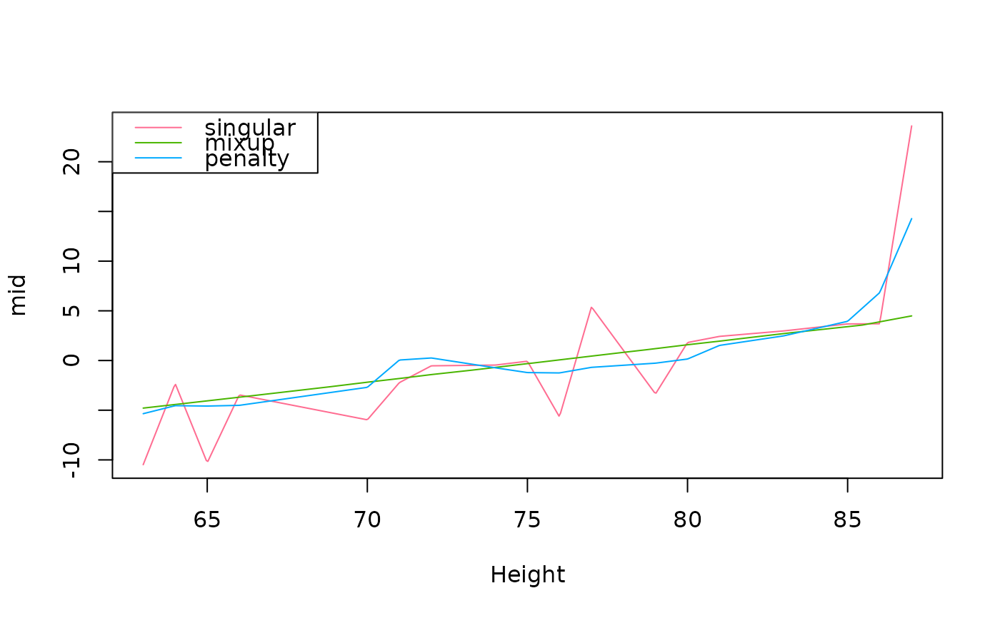

mixup() generates synthetic data points by combining pairs of existing observations.
For numeric variables, it calculates a convex combination.
For categorical variables (such as factors or characters), it randomly selects one of the two values based on the generated combination weight.
Usage
mixup(object, n = nrow(object), weights = NULL, alpha = 0.2, seed = NULL)Arguments
- object
a data frame or matrix containing the original data.
- n
an integer specifying the number of synthetic observations to generate. Defaults to the number of observations.
- weights
an optional numeric vector of probability weights for sampling the observations.
- alpha
a numeric scalar representing the shape parameter of the Beta distribution. Smaller values (e.g., 0.2) generate data closer to the original points (acting as a local perturbation). Defaults to 0.2.
- seed
an optional integer to set the random seed for reproducibility.
Value
mixup() returns an object of the same class as object (either "matrix" or "data.frame") containing n generated synthetic observations.
Details
The Mixup algorithm creates a new synthetic observation \(x_{new}\) from two randomly sampled observations \(x_1\) and \(x_2\). A combination weight \(\lambda\) is drawn from a Beta distribution, \(\text{Beta}(\alpha, \alpha)\).
For numeric variables, the synthetic data is generated via a convex combination: $$x_{new} = \lambda x_1 + (1 - \lambda) x_2$$
For non-numeric variables, the value is chosen from \(x_1\) with probability \(\lambda\), and from \(x_2\) with probability \(1 - \lambda\).
Examples
# fit a model
fit <- lm(Volume ~ I(Girth^2) + Girth + Height, trees)
# generate new synthetic rows
mixup_trees <- mixup(trees, 500)
summary(mixup_trees)
#> Girth Height Volume
#> Min. : 8.30 Min. :63.00 Min. :10.20
#> 1st Qu.:11.11 1st Qu.:72.00 1st Qu.:19.90
#> Median :12.90 Median :76.00 Median :24.60
#> Mean :13.20 Mean :75.79 Mean :30.03
#> 3rd Qu.:14.90 3rd Qu.:80.00 3rd Qu.:37.53
#> Max. :20.60 Max. :87.00 Max. :77.00
# combine with the original data
combined_trees <- rbind(trees, mixup_trees)
# fit MID models
mid1 <- midr::interpret(Volume ~ ., trees, fit, k = 25, ok = TRUE)
#> singular fit encountered
mid2 <- midr::interpret(Volume ~ ., combined_trees, fit, ok = TRUE)
mid3 <- midr::interpret(Volume ~ ., trees, fit, lambda = .1, ok = TRUE)
# compare effects
ml <- midr::midlist(singular = mid1, mixup = mid2, penalty = mid3)
plot(ml, "Height")
hclpal <- midr::color.theme("HCL")$palette(3)
legend("topleft", labels(ml), lty = 1, col = hclpal)
